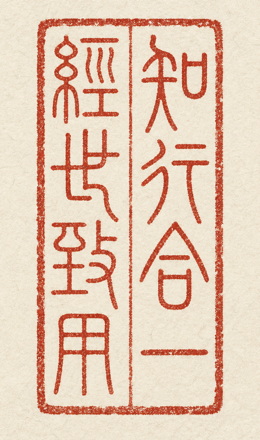

训练 × 推理
贯通模型训练、推理服务与生产反馈。
个人简历 · 二〇二六
字节跳动 Data-AML × 资深技术专家 · 前端与全栈团队负责人
聚焦训练、推理、Case 闭环、Agent Harness 与行业 Agentic 化。

ABOUT · 关于我
专注于 AI 训练、推理、Case 采集与模型进化闭环的系统工程，把数据、评测、反馈与迭代机制连接为可规模化运转的基础设施。
在 Agent 与 Harness 方向持续深入，推动复杂任务从模型能力走向可编排、可评测、可观测、可持续进化的生产系统；并以行业 Agentic 化为路径，推进 AI 效能转型与组织生产力提升。
贯通模型训练、推理服务与生产反馈。
以采集、评测与回流驱动模型持续进化。
构建可编排、可观测、可治理的 Agentic 生产系统。
JOURNEY · 经历
从交易、供应链和本地生活，到大模型服务与训练平台，始终以真实使用检验技术价值。
字节跳动 · Data-AML
负责 Data-AML 80+ 人前端与全栈团队，覆盖字节大模型 MaaS 服务平台与火山方舟的前端、用户侧服务端、CLI 和 Agent；AI 搜索推荐服务前端；公司内大模型训练平台 Merlin，以及推荐模型训练平台 Forge 的前端与 Agent 开发。
快手 · 本地生活事业部
担任本地生活前端与 AI 应用团队负责人，带领 60+ 人团队，覆盖全前端方向及商家、CRM 独立 App；从 0 搭建 AIGC 短视频、直播与评论回复业务，并横向主导 AI 研发测试提效与原生业务赋能。
阿里巴巴 · 供应链平台事业部
先后负责天猫逆向交易、协同供应链、新零售终端及计划域与数据决策前端团队。带领 13 人建设目标管理、经营计划、S&OP 等大计划域产品，并推动供应链向 SaaS / PaaS 转型，搭建数据可视化、数据处理、连接与权限体系。
SELECTED PRACTICE · 代表实践
从 AI 平台、业务应用、研发效能与复杂系统四条脉络，呈现技术工作的真实结果。
MAAS / FULL-STACK / CLI / AGENT
统筹火山方舟的前端、用户侧服务端、CLI 与 Agent，AI 搜索推荐服务前端，以及 Merlin、Forge 两类模型训练平台的前端和 Agent 开发，形成从训练到服务的完整产品链路。
AIGC / 模型微调 / MULTI-AGENT
从 0 建设智能选品、文案自学习与自动生产、视频及直播自动剪辑组装发布、数据追踪改进体系；沉淀多项微调大模型能力，形成业务 AI 应用基石。
工程效率 / 质量保障 / AI DEVOPS
以卡点解除、全面基建保障、AI 研测提效三步推进；补齐组织对标、成熟度度量、前端工程与效率体系，推动产品功能对齐率由 30% 提升至 85%。
复杂系统 / 数据可视化 / 新零售
建立数据处理、连接与权限体系及搭建式报表、多端展现产品；从 0 建成门店经营 ERP 和无人贩卖机 B+C 端，支持商家、供应商、采购、销售与会员体系。
PRACTICE · 所长